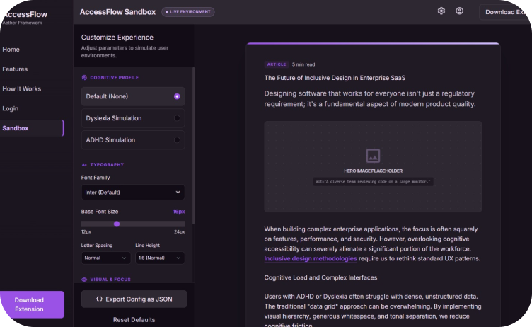
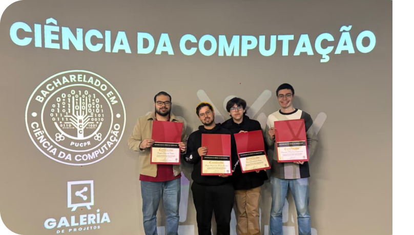

Accessflow


Tecnologia: React Node Prisma
Projeto voltado para pessoas com neurodivergência, permitindo a personalização de páginas no navegador Chrome de acordo com suas necessidades.
Fui responsável pelo banco de dados, integração e desenvolvimento do backend. Nesse projeto desenvolvi minhas habilidades com Node.js e aprendi a utilizar o Prisma.